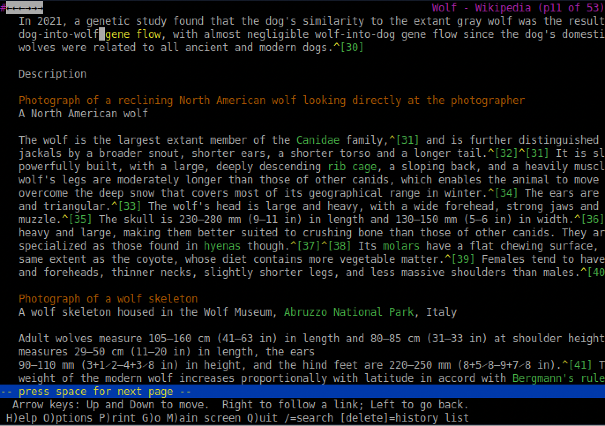

Este item aborda como as pessoas com deficiência acessam a web, exemplos de barreiras ao acessar páginas e o uso de tecnologia assistiva (tecnologia de apoio).
Para acessar a web, muitas pessoas cegas utilizam o leitor de tela. Alguns usuários usam navegadores textuais como o Lynx ou navegadores com voz em vez de utilizar um navegador comum (navegador com interface gráfica). É muito comum as pessoas cegas se utilizarem da tecla "tab" para navegar somente em links ao invés de ler todas as palavras que estão na página. Deste modo eles têm uma rápida noção do conteúdo da página ou podem acessar o link desejado mais rapidamente.
Leitor de Tela: é um software que lê o texto que está na tela do computador e a saída desta informação é através de um sintetizador de voz ou um display braille - o leitor de tela "fala" o texto para o usuário ou dispõe o texto em braille através de um dispositivo onde os pontos são salientados ou rebaixados para permitir a leitura.
Navegador Textual: é um navegador baseado em texto, diferente dos navegadores com interface gráfica onde as imagens são carregadas. O navegador textual pode ser usado com o leitor de tela por pessoas cegas e também por pessoas que acessam a internet com conexão lenta.
Navegador com Voz: é um sistema que permite a navegação orientada pela voz. Alguns possibilitam o reconhecimento da voz e a apresentação do conteúdo com sons, outros permitem acesso baseado em telefone (através de comando de voz pelo telefone e/ou por teclas do telefone).

Exemplos de barreiras ao acessar o conteúdo de uma página:
Para acessar a web, algumas pessoas com deficiência visual parcial usam monitores grandes e aumentam o tamanho das fontes e imagens. Outros usuários utilizam os ampliadores de tela. Alguns usam combinações específicas de cores para texto e fundo (background) da página, por exemplo, amarelo para a fonte e preto para o fundo, ou escolhem certos tipos de fontes.
Ampliador de Tela: é um software que amplia o conteúdo da página para facilitar a leitura.
Exemplos de barreiras ao acessar o conteúdo de uma página:
O daltonismo refere-se à falta de percepção a certas cores. Uma das formas mais comuns do daltonismo inclui a dificuldade de distinguir entre as cores vermelha e verde, ou amarelo e azul. Algumas vezes o daltonismo resulta em não perceber as cores.
Para acessar a web, algumas pessoas personalizam as cores da página, escolhendo as cores das fontes e do fundo.
Exemplos de barreiras ao acessar o conteúdo de uma página: